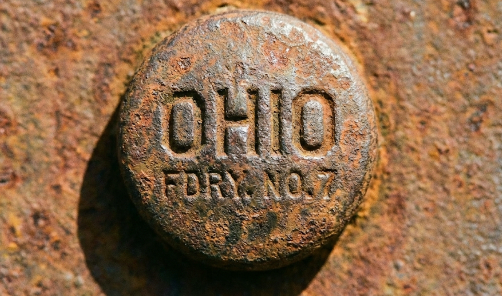

GLB DOSSIER • TOLEDO • ID: TBD
GLOBAL LEAGUE BASEBALL
Toledo
A city with teeth and humor — built on river grit, factories, and Friday-night loyalty. This dossier documents the club as it is remembered and recorded.
Club Profile
City
Toledo
Division
TBD
Colors
TBD
Identity
TBD (blue-collar, loud, loyal)
Tagline
TBD
River Town
Factory Humor
Hard Luck / Hard Love
Crowd-Driven
Ballpark
Name
TBD Stadium Name
Capacity
TBD
Surface
Natural Grass / TBD
Signature
TBD (one weird sightline, one beloved smell)
Location
TBD (near water / rail / industry)
Archive Artifact

FOUND MATERIAL:
Source: TBD
Date: TBD
Condition: Uneven / sun-faded / handled
Notes: This artifact is included as-is. No cleanup beyond sizing.
Source: TBD
Date: TBD
Condition: Uneven / sun-faded / handled
Notes: This artifact is included as-is. No cleanup beyond sizing.
Broadcast
Play-by-Play
TBD
Color
TBD
Sideline
TBD
Tone
Fast, funny, local references
Booth rule: they speak like the city speaks — smart, blunt, and allergic to hype.
Mascot & Rituals
Mascot
TBD
7th Inning
TBD (crowd chant / odd contest)
Walk-up
TBD (regional, loud, a little wrong)
Tradition
TBD
Club Notes
Toledo plays like a chip on the shoulder with a grin. Not polished. Not trying to be. When they win, it feels like the city did it. When they lose, the city keeps talking anyway.
Roster Style
TBD (contact/chaos/power/arms)
Weakness
TBD
Strength
TBD
Rival
TBD